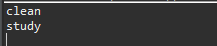

[Java] 15. 列挙型(バイナリデータビット演算子の使用例)
こんにちは。明月です。
この投稿はJavaの列挙型(バイナリデータビット演算子の使用例)に関する説明です。
データを格納する時には値を格納し、修正ができる一般変数とfianlキーワードを使って値を変更できない定数型で使うことができます。
link - [Java] 2. 変数と定数の宣言方法、そして原始データタイプとクラスデータタイプの差異
定数型で使う場合はプログラム上で基準になるキー値で使うか比較をしなければならない値でよく使います。
// 人クラス
class People {
// 状態変数
private int state;
// 行動状態を追加する関数
public void addState(int state) {
// 状態変数に追加
this.state |= state;
}
// 出力関数
public void print() {
// 掃除したかをチェック
if ((this.state & 0x01) != 0) {
// コンソール出力
System.out.println("clean");
}
// 勉強したかをチェック
if ((this.state & 0x2) != 0) {
// コンソール出力
System.out.println("study");
}
// 遊んだかをチェック
if ((this.state & 0x4) != 0) {
// コンソール出力
System.out.println("play");
}
// 寝たかをチェック
if ((this.state & 0x8) != 0) {
// コンソール出力
System.out.println("sleep");
}
}
}
public class Example {
// 定数宣言
// 掃除 0001
public static final int clean = 0x1;
// 勉強 0010
public static final int study = 0x2;
// 遊び 0100
public static final int play = 0x4;
// 寝る 1000
public static final int sleep = 0x8;
// 実行関数
public static void main(String... args) {
// 人のインスタンスを生成
People p1 = new People();
// 掃除して遊んだ。
p1.addState(clean);
p1.addState(study);
// 出力
p1.print();
}
}

上のソースはPeopleというクラスを人に設定してどの行動をしたかを追加するソースです。
ここで行動の基準を作るためにintタイプの定数を四つを作成しました。そしてaddState関数で行動を追加してPeopleクラス中でバイナリビット演算子を利用して行動を追加することになりました。そしてprint関数で内訳を出力します。
こんなに作成しても何も問題ありません。オブジェクト指向の特性をため、行動をClassで分類して抽象化、継承しなければならないですが、簡単にこんなに作成しても構いません。
実際に実務でこんなに作成する場合も多いです。ルールに従ってプログラムを作成することも重要ですが、そのルールがあることが可読性や管理しやすくためなので、簡単に作成する方法と見やすい方法があればその方が良いです。
上の比較データによって定数を使いました。プロジェクトサイズが大きくなって、行動データが増える場合、定数が増えることになります。
定数のデータもデータタイプがintタイプなので、state変数だけみれば何のデータがあるかを確認することが大変です。上のソースは変数名も理解しやすいし、コメントもちゃんとあるので別に問題なさそうですが、データが多く、変数名も迷いやすいことで決めると後でプログラム管理が簡単ではないと思います。
それを解決するためには列挙型があります。
import java.util.ArrayList;
import java.util.List;
// 列挙型
enum PeopleState {
clean, study, play, sleep
}
// 人のクラス
class People {
// 状態リスト
private List<PeopleState> states = new ArrayList<>();
// 行動状態を追加する関数
public void addState(PeopleState state) {
// 重複は入力しない。
if(!states.contains(state)) {
// リストに追加
states.add(state);
}
}
// 出力関数
public void print() {
// 状態リストの値を取得
for (int i = 0; i < states.size(); i++) {
// 列挙型はそのまま出力するとタイプ名が出力する。
System.out.println(states.get(i));
}
}
}
// 実行クラス
public class Example {
// 実行関数
public static void main(String... args) {
// 人のインスタンス生成
People p1 = new People();
// 掃除して遊んだ。
p1.addState(PeopleState.clean);
p1.addState(PeopleState.study);
// 出力
p1.print();
}
}
結果は同じです。でも列挙型ではパラメータを渡すから誰が見てもaddStateにどの値が格納するかを見やすいです。
始めのソース例はintタイプでバイナリデータ比較をしました。普通はバイナリデータではなく、Stringなどを使って定数を宣言する時が多いです。
でもバイナリデータ比較はプラグが多いときにずいぶん早いパフォーマンスで処理することができます。実際の業務でもそんなバイナリデータコードが多いです。
列挙型を使うことでもパフォーマンスが遅くなることではないけど、Listを使って比較処理があればビッド演算子処理ではなくequals関数を使う場合が多いのでバイナリデータをビット演算子を使うことよりはパフォーマンスが落ちるではないかと思います。
なので、パフォーマンスよって使えばよいと思います。
ここまでJavaの列挙型(バイナリデータビット演算子の使用例)に関する説明でした。
ご不明なところや間違いところがあればコメントしてください。
- [Java] 22.スレッド(Thread)を使う方法2019/09/06 22:30:49
- [Java] 21. アノテーション(Annotation)を使う方法2019/09/05 22:58:20
- [Java] 20. iterator(for-each)とStream APIを使う方法2019/09/04 20:11:28
- [Java] 19. ラムダ(Lambda)を使う方法2019/09/03 20:37:14
- [Java] 18. 匿名クラス(Anonymous class)とクロージャ(closure)2019/09/02 20:30:34
- [Java] 17. ジェネリックタイプ(Generic type)を使う方法2019/08/27 19:05:44
- [Java] 16. 例外処理(try~catch~finally, throw)を使う方法2019/08/26 23:40:29
- [Java] 15. 列挙型(バイナリデータビット演算子の使用例)2019/08/23 19:46:10
- [Java] 14. オブジェクト指向プログラミング(OOP)の4つ特性(カプセル化、抽象化、継承、多相化)2019/08/22 20:08:37
- [Java] 13. 抽象クラス(abstract)と継承禁止(final)2019/08/22 00:06:20
- [Java] 12. インタフェース(interface)2019/08/20 23:46:23
- [Java] 11. StringのhashCodeとequals、そしてtoStringの再定義(override)2019/08/20 00:42:04
- [Java] 10. メモリの割り当て(stackメモリとheapメモリ、そしてnew)とCall by reference(ポインタによる参照)2019/08/07 20:53:34
- [Java] 9. アクセス修飾子とstatic2019/08/06 20:22:48
- [Java] 8. クラスの継承とthis、superキーワードの使い方2019/08/05 23:22:58
- [C#] 58. ウィンドウフォーム(Window form)を作成する方法、そしてウィンドウメッセージとキュー2021/10/27 20:35:44
- [Design pattern] 2-3. ブリッジパターン(Bridge pattern)2021/10/27 20:32:21
- [Design pattern] 2-2. コンポジットパターン(Composite pattern)2021/10/27 20:30:54
- [Design pattern] 2-1. アダプターパターン(Adapter pattern)2021/10/26 19:12:40
- [Project design] プログラム最終テスト - ST(System test(Standard, Scenario))2021/10/26 19:10:07
- [Project design] プログラム結合テスト - IT(Integration test)2021/10/25 20:12:17
- [Python] Seleniumライブラリを使う方法(自動ウェブテスト、ウェブスクレイピング)2021/10/25 19:29:00
- [Design pattern] 1-5. プロトタイプパターン(Prototype pattern)2021/10/22 19:35:45
- [Project design] プログラム検証とテスト - Unitテスト2021/10/22 19:34:09
- [C#] 57. コーティング規約2021/10/21 18:57:02
- [C#] 56. 値の初期化及び基本データ値(default)を設定する方法、そして原始データのnull処理、?と??の使い方2021/10/21 18:54:41
- [C#] 55.namespaceとusing、そしてpartialの使い方2021/10/21 18:51:39
- [C#] 54. Reflection機能を使い方 - Attribute2021/10/20 19:29:31
- [Project design] プログラム制作(コーディング) - クラス作成方法2021/10/20 19:28:09
- [C#] 53. Reflection機能を使い方 - Propertyとevent2021/10/19 21:02:58